本节课正式进入宏观框架中体量最庞大、也最复杂的领域——汇率。首先从汇率的基本概念出发，明确汇率本质是两种货币之间的兑换比率（即一国货币对另一国货币的"价格"）， 并揭示汇市是全球体量最大的金融市场（约为债市的10倍），且极度专业化、杠杆化，主要通过衍生品交易、赚取的是利率差而非汇率价差。 随后系统讲解记录一国对外经济活动的"总账本"——国际收支平衡表，拆解其三大核心账户（经常账户、资本和金融账户、净误差与遗漏）的构成与经济含义。 最后归纳出影响汇率波动的五大核心因素：宏观经济基本面（经济增速、贸易平衡度、物价）、利率与货币政策、地缘政治与信心、市场心理与预期、政策因素， 并辨析了国家干预汇率的直接工具（利率）与间接工具（货币政策），为理解汇率变动构建底层分析框架。
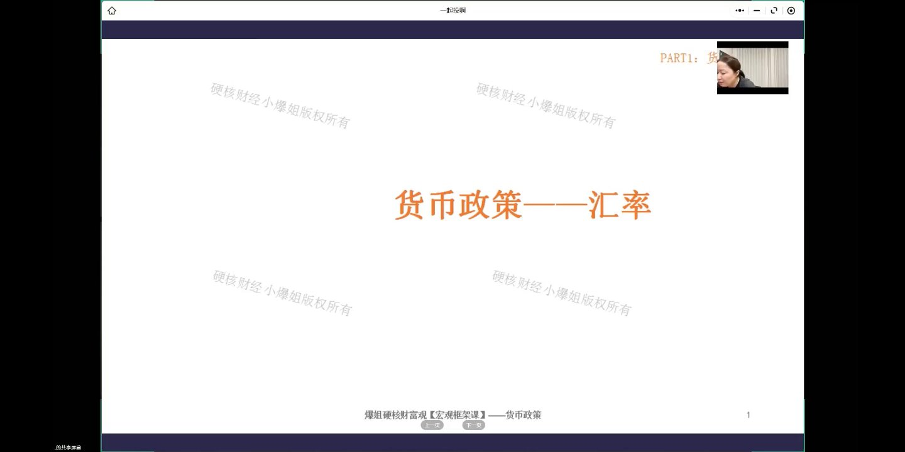
汇率指的是两种货币之间的兑换比率，你可以把它看作是一个国家的货币对另一个国家货币的价格——注意，是"价格"，不是"价值"。
用一句最简单的话来提炼：
汇市的体量远超你的想象：以美国为例，债市比股市更大（美国货币体系通过美债实现），而汇市是债市的10倍之大。也就是说，在整个金融体系里，股市反而是最小的那个。
两个误区一定要避开：① 千万不要因为汇率涨跌就拿本币去换外币现钞——加上手续费和汇率波动，普通人几乎没有盈利空间。② 如果真想配置美元资产，应该买美债或美股指数基金，而不是持有美元现金。整个全球汇市都不是用现钞交易的。
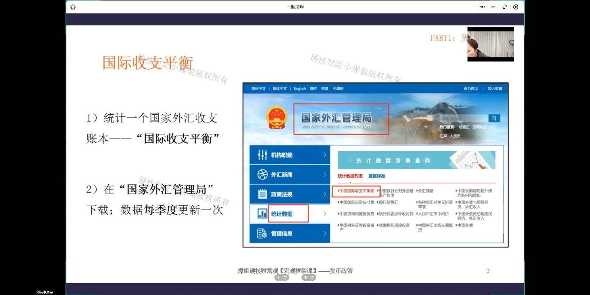
既然提到外汇收支，那一个国家的外汇收支记录在哪里？答案是一个叫"国际收支平衡"的账本。
概念说明：严格来说，国际收支平衡的口径略大于外汇收支（包含的内容更多一点），但为了便于理解，大家就把它当成"国家的外汇收支账本"来看就行。因为没有一个专门的地方单独显示外汇收支，所以看这张表就够了。
路径：国家外汇管理局官网 → 左侧"统计数据" → 中国国际收支平衡表。数据每季度更新一次（不是每月）。
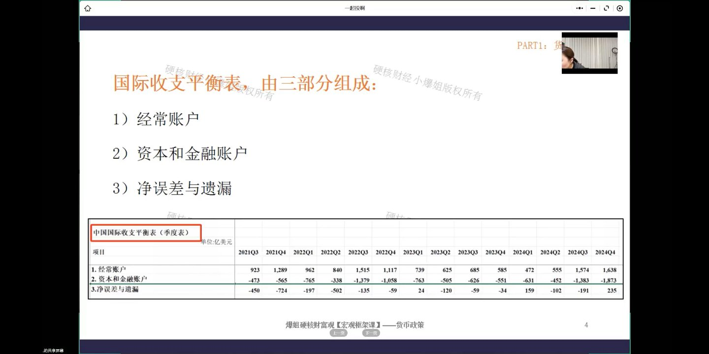
中国国际收支平衡表由三个部分组成，记住这三项，后面会分别展开：
PPT上这张表展示了2021Q3到2024Q4各季度的数据（单位：亿美元）。可以看到：
为什么经常账户顺差、资本账户逆差？这不是数据出错，而是国家主动平衡的结果——后面讲贸易平衡度时会详细展开。
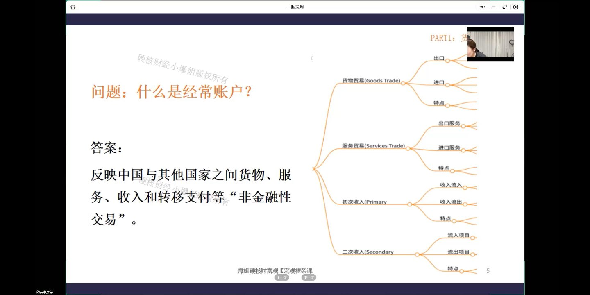
经常账户反映的是中国与其他国家之间货物、服务、收入和转移支付等"非金融性交易"。关键词是"非金融性"——只要是金融类的交易（买股票、买债券等），都不在这个账户里。
经常账户包含四个子类，每个子类都是双向的（流入/流出）：
关键记忆点：经常账户里的大头是货物贸易（外贸进出口），这也是大家平时听到"顺差逆差"最主要的来源。以后讲汇率，经常说的就是"经常账户发生了什么变化"。
资本和金融账户反映的是资本跨境流动和金融资产之间的交易。这个名字是两个词拼在一起的："资本账户"和"金融账户"。
主要是非生产性资产交易（土地、矿权等自然资源买卖）和资本转移（债务豁免、移民转移资产等）。规模非常小，不需要重点关注。
金融账户是这个账户的绝对大头，包含以下几项，核心关注前两个：
总结两个账户的分工：经常账户 = 非金融性交易（做买卖、服务、收入转移）；资本和金融账户 = 金融性交易（投资、存钱、央行调储备）。以后看汇率，这两个账户必须重点看。
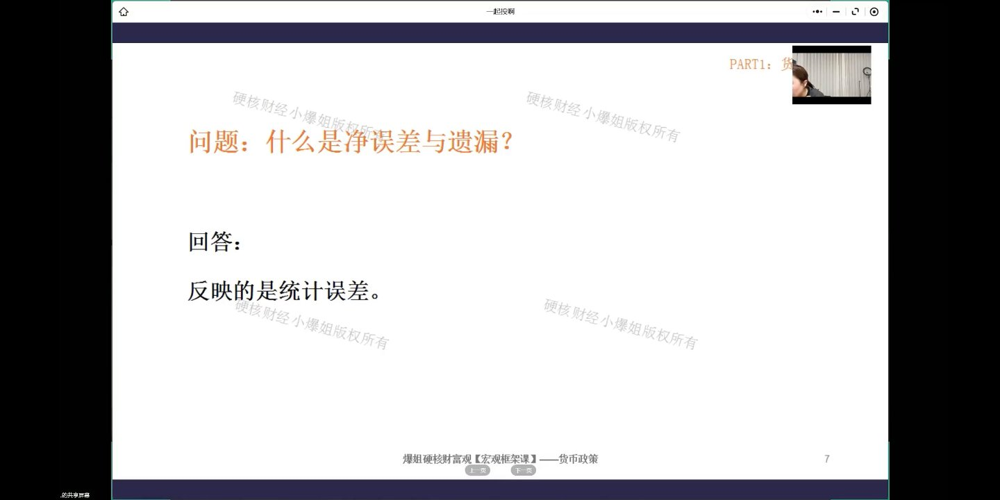
第三项叫"净误差与遗漏"，反映的是统计误差。虽然没有官方明确解释，但最大的可能是：因为数据来源存在差异，有些交易实际发生了但没被记录，导致账做不平。
这个账户一般在正常范围内波动，不需要特别解读。
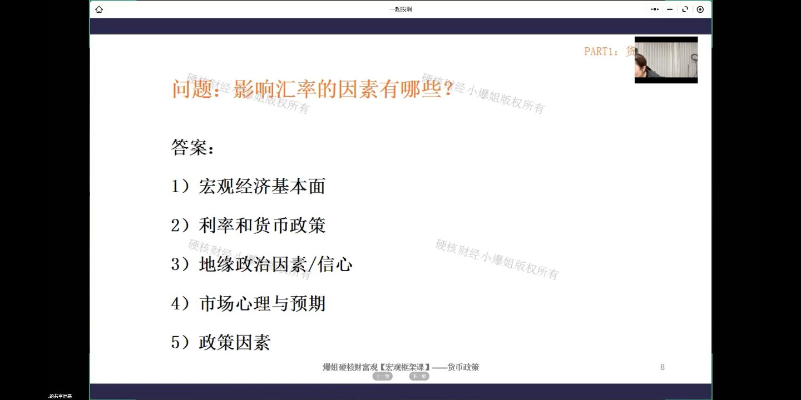
国际收支平衡表讲完了，接下来进入核心问题：什么情况下汇率会升值？什么情况下会贬值？
影响汇率的因素非常多，而且彼此勾稽（一个的因是另一个的果）。爆姐将其抽象归纳为五大类（这个分类是重新抽象的，别处可能不一样）：
重要提醒：这些因素不是孤立的，它们互相勾稽、互相影响。汇率是多条件共振出来的结果，千万不能看到单一因素就下结论。比如降息理论上导致贬值，但如果美元贬得更快，人民币反而被动升值。
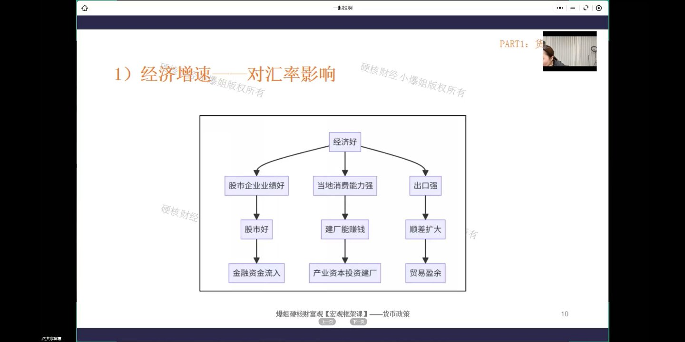
宏观经济基本面对汇率的影响是最大且最深远的，这句话要牢牢记住。经济增速高 → 汇率升值；经济增速差 → 汇率贬值。
一个国家经济发展好，会吸引海外两笔钱进来：
经济走强通常伴随制造业、研发能力增强 → 对外出口同步增加 → 更容易出现贸易顺差 → 贸易盈余增加 → 汇率升值。
经济一塌糊涂 → 金融资本和产业资本都争先恐后流出 → 卖出本币 → 供给大于需求 → 本币贬值。同时出口也会因为经济差而受到抑制。
一个反直觉的点：理论上货币贬值有利于出口，但如果经济基本面太差，即使货币便宜也没用——经济差导致出口受损的影响，比贬值促进出口的影响更大。这就是为什么经济基本面是"最大最深远"的因素。
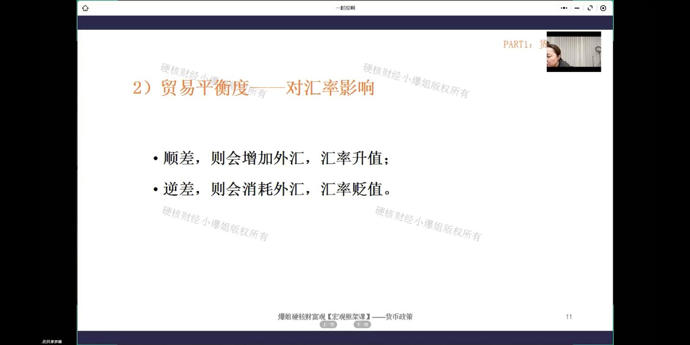
逻辑很简单：
你在海外挣的钱想进入国家外汇储备，有一个前提：必须结汇——把外汇兑换成人民币。如果企业/个人在海外赚了钱一直趴在海外，不换汇，那不算我们的外汇储备。
这就意味着：外汇储备越多 = 背后兑换的人民币越多 = 换人民币的人多了 = 汇率必然升值。
中国是贸易顺差国，按说人民币应该持续升值？但这些年我们其实在持续贬值——为什么？
答案：国家在主动做对冲。经常账户因为贸易顺差一直在"进水"（收美元），但我们不愿意让汇率单边大幅升值（会打击出口），所以就从资本和金融账户往外"出水"——去海外买地、买港口运营权、买矿产权、做大量对外投资。一进一出两边"拉平"，人民币汇率就能稳定在一个合理区间。
最重要的两个字：平衡。汇率要在双边或多边关系里维持在合理区间做窄幅震荡。一旦单边大幅升值或单边大幅贬值，就叫"超调"——超过了合理范围，就属于风险范畴，央行就会出手人为干预修正。
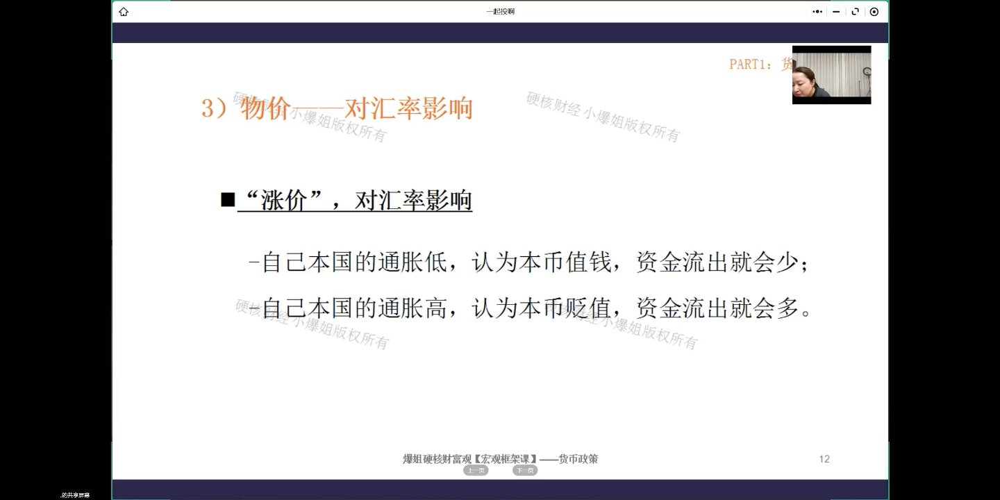
物价对汇率的影响分两个层面：一个是"涨价"（通胀），一个是"物价水平"（绝对价格）。
（案例：阿根廷比索恶性通胀，人们不敢持有本币。）
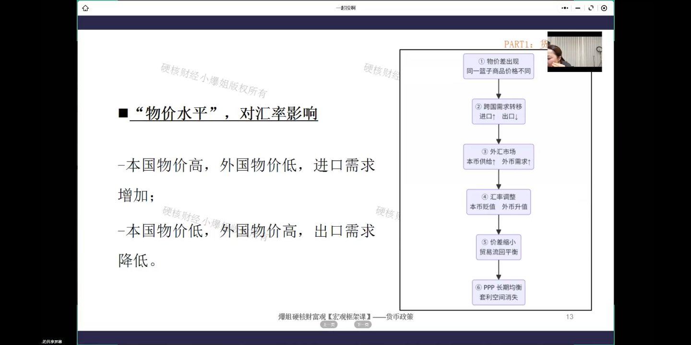
购买力平价理论的核心：在没有贸易壁垒和运输成本的理想条件下，同一件商品在不同国家的价格应该是一样的。如果存在价差，会通过汇率调整来消除。
爆姐举的苹果例子：
PPP结论：一个国家的物价高于另一个国家，它的货币相对另一个国家就会贬值。流程图：物价差出现 → 跨国需求转移（进口↑出口↓）→ 外汇市场（本币供给↑外币需求↑）→ 汇率调整（本币贬值外币升值）→ 价差缩小贸易流回平衡 → PPP长期均衡套利空间消失。
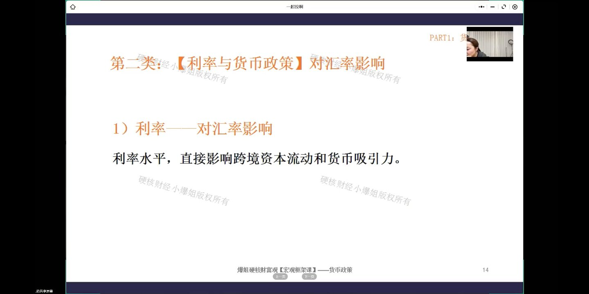
利率水平直接影响跨境资本流动和货币吸引力。两国之间的利差（"水位差"）是决定汇率的重要因素。
全球以美元利率为锚。美联储加息 → 美元资产收益率上升 → 全球资本偏好美元资产 → 钱从新兴市场流出 → 新兴市场货币贬值。这就是为什么各国央行都紧盯美联储决议——你加息我也加，不然利差太大资金全跑了。
中国相对抗压：我们是外汇管制国，资金不能自由进出，所以美联储加息对我们的冲击比完全自由兑换的国家小很多。但对于外汇自由的国家，美联储一加息，资金就大规模流出，汇率大幅贬值，那就是灾难。
实操中，金融资本是算总账的。如果利差2个点，但汇率波动5个点，利差全被汇率波动吃掉了，那就不会去做。所以真正做汇率交易的，一定会用远期合约、掉期合约等衍生品锁汇，把资金成本全部算进去，还有的赚才出手。
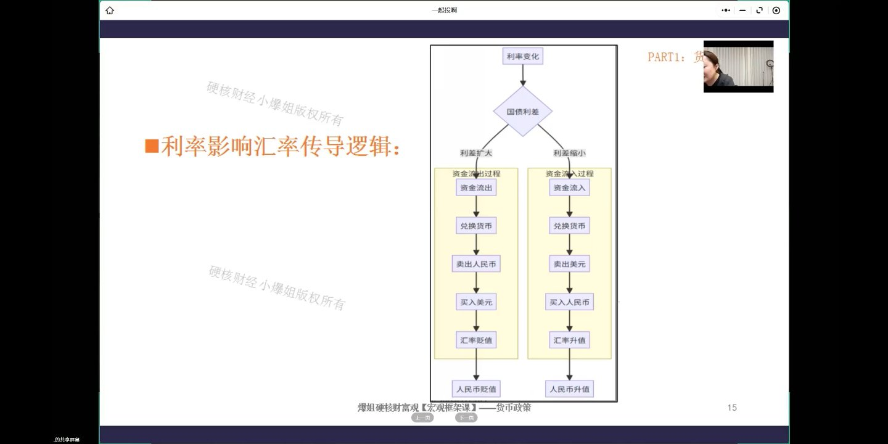
这张流程图把利率→汇率的传导路径画得很清楚：
假设中国降息、美国加息 → 两国利差越拉越大 → 聪明钱涌向海外做套息：
反过来，如果中国利率比美国高 → 海外资金涌入人民币资产：
为什么降息总是"扭扭捏捏"？因为一降息 → 利差扩大 → 资金流出 → 人民币贬值。但汇率贬值对出口压力很大，所以央行要在"刺激经济"和"稳汇率"之间做平衡，通常选择在汇率本身升值的时候找时机降息，这样降息带来的贬值压力会被对冲掉一部分。
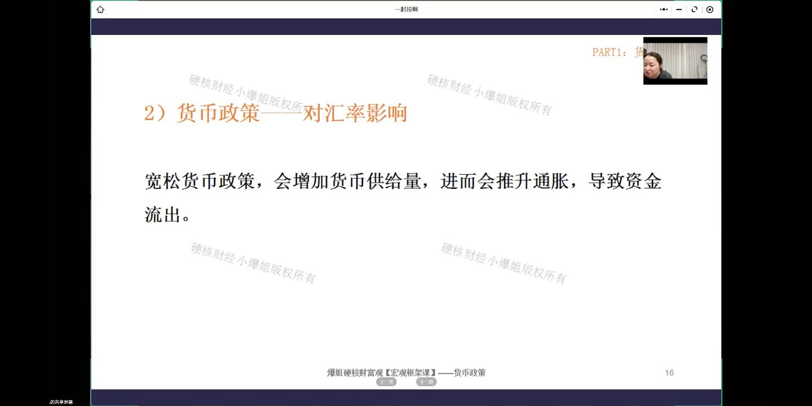
宽松货币政策 → 增加货币供给量 → 推升通胀 → 人们觉得钱毛了 → 资金流出 → 汇率贬值。紧缩货币政策效果相反。
因为货币宽松的背后是汇率要承受巨大压力。央行不能头痛医头脚痛医脚，做任何决策都要综合考虑。通常的做法是：在汇率有升值的时候，宽松的空间就大一点；如果汇率本身就在贬，还大幅宽松，贬值会更厉害。
央行降息要考虑的连锁反应：降息→汇率贬值压力；降息→国债收益率下降→影响其他债券定价；降息→银行净息差收窄→金融机构能不能活？所以每一步都要"匀一匀、平一平、拉一拉"，在多个目标之间权衡。
爆姐提醒：很多人觉得政策"不给力"，其实是不了解背后要平衡的千头万绪。成熟的投资者要学会管理自己对政策的预期——政策本身没问题，往往是预期太高了。
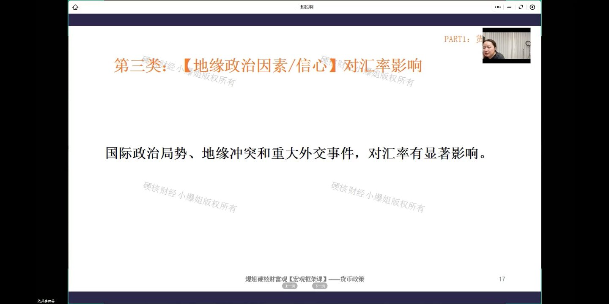
国际政治局势、地缘冲突和重大外交事件，对汇率有显著影响。
任何地区只要不安定（打仗、内乱、分裂），就会动摇投资者信心。对真正做资金的人来说，安全永远是第一要务——哪怕收益率低也要把钱放到安全的地方（黄金、瑞士国债等）。所以：
2018年中美贸易战：从2018年3月到2020年5月，互征关税期间，人民币对美元累计下跌超过12%——汇率超跌12%是非常深的。贸易摩擦直接影响进出口 → 经常账户受影响 → 汇率贬值。
现在美元风险溢价在上升，原因包括：美联储失去独立性（政治化）、美元武器化（冻结俄罗斯外汇储备）、财政严重失衡（天量发债）。这些政治因素都会导致美元长期走弱（贬值）。
汇率也会受市场情绪和投机行为的影响，而且具有很强的"自我实现"特性。
案例：俄乌开战时，日本经济基本面什么都没变，也没参战，但避险情绪导致资金从日本快速流出跑去买黄金/瑞士国债，日元短期大幅贬值——这就是纯粹由心理预期导致的"超调"。等情绪平复后，汇率又会回到基本面决定的中枢。
市场心理和预期会放大升值或贬值的幅度——本来不该贬这么多，但因为大家抢跑，贬值幅度被放大了。
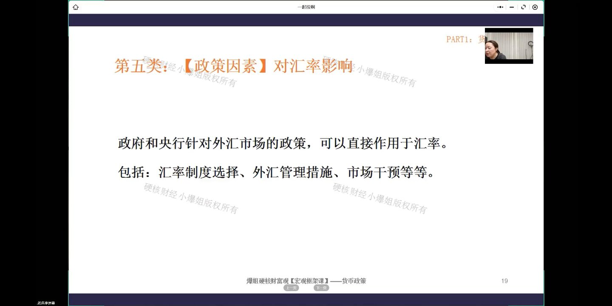
政府和央行针对外汇市场的政策，可以直接作用于汇率。包括：
中国的汇率管理特征：我们是"政策主导+渐进开放"的市场，不是完全自由浮动的。好处是汇率大幅波动和超调的概率低——一旦有贬值迹象，央行马上出手（中间价引导、外汇存款准备金调整、逆周期因子等）。代价是资金不能自由进出，效率低一些，但稳。
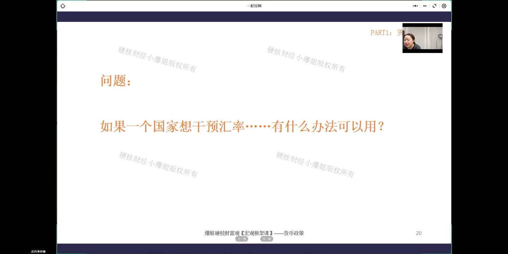
爆姐抛了一个问题：一个国家想干预汇率，有什么办法？哪些是直接工具，哪些是间接工具？
利率是最直接、最快的工具。一加息 → 高利率吸引外部资金流入 → 对人民币需求增加 → 人民币升值。一降息 → 国内资金外流 → 人民币需求减少 → 人民币贬值。利率一操作，汇率马上就有反应，速度非常快。
这也解释了为什么降息总是"扭扭捏捏"——因为一降息汇率就贬，而贬值对出口压力很大。央行通常在汇率升值的时候找时机降息，让贬值压力被升值对冲掉一部分。
通过货币政策调节汇率，链路更长、见效更慢，但影响面更广：
央行不能只盯着汇率一个目标，要在汇率、通胀、经济增速、银行净息差等多个目标之间做权衡。政策效果还取决于市场对政策的理解和预期——政策本身没问题，但如果预期太高，市场会觉得"不及预期"，照样给你脸色看。
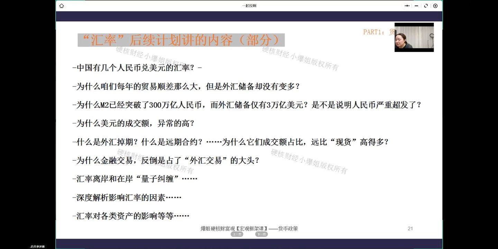
汇率变量极多，前一个因素的果是后一个因素的因。比如"一直在降息为什么汇率还升值了？"——因为贬值是相对的，如果对应的那个货币贬得更快，你反而被动升值。千万不能看单一因素就下结论。
想做资产必须了解美国——它的货币政策有溢出效应。中国是政策主导+渐进开放的汇率市场，不是完全自由浮动的，所以学会看政策、对政策报合理预期非常关键。
后续课程预告（部分）：① 中国有几个人民币兑美元汇率？② 为什么每年贸易顺差那么大但外汇储备没怎么变多？③ M2突破300万亿而外汇储备仅3万亿美元，人民币超发了吗？④ 为什么美元成交额异常高？⑤ 什么是外汇掉期/远期合约？为什么衍生品占比远超现货？⑥ 为什么金融交易反而是外汇交易的大头？⑦ 汇率离岸和在岸的"量子纠缠"；⑧ 深度解析影响汇率的因素；⑨ 汇率对各类资产的影响。
爆姐寄语：汇率这块骨头很难啃，但啃下来之后你会有"会当凌绝顶，一览众山小"的感觉——万变不离其宗。站在家里也可以看懂中美，看懂全球资金的流向。了解这些不是为了成为交易员，而是为了不犯原则性的错误，不盲目把钱扔进一个自己完全不了解的市场。
本节课正式开启了汇率部分的第一讲，核心收获：
第一，汇率是两种货币之间的兑换比率（即一国货币的"价格"）。汇市是全球最大的金融市场（约为债市10倍），极度专业化、杠杆化，主要通过衍生品交易，赚的是利率差而非汇率价差。普通人不要拿现钞去"炒汇"。
第二，记录国家外汇收支的"总账本"是国际收支平衡表（国家外汇管理局官网按季度更新），由三部分组成：经常账户（非金融性交易，含货物贸易/服务贸易/初次收入/二次收入）、资本和金融账户（金融性交易，核心是FDI和证券投资）、净误差与遗漏（统计误差）。
第三，影响汇率的五大核心因素：① 宏观经济基本面（经济增速、贸易平衡度、物价/PPP）——影响最大最深远；② 利率与货币政策——最直接的工具；③ 地缘政治与信心；④ 市场心理与预期（自我实现、放大波动）；⑤ 政策因素（汇率制度、外汇管制、直接干预）。
第四，中国作为贸易顺差国，通过资本和金融账户对外投资来"对冲"经常账户顺差，维持汇率在合理区间。汇率不是越高越好也不是越低越好，平衡最重要，单边大幅超调就会触发央行干预。
第五，国家干预汇率：利率是最直接最快的工具（加息→升值，降息→贬值）；货币政策是间接工具（通过通胀和经济增长两个渠道传导，慢但影响面广）。央行要在汇率、通胀、经济增速、银行息差等多目标间权衡。
第六，看中国汇率：短期看央行动作，中期看经济转型（内需消费能否起来），长期赌国运赛道。人民币贬值/升值是相对的，是多条件共振的结果。
以下为课程配套的专业版知识卡片，汇总了本期核心知识点的完整框架。

以下为极简版知识卡片，用问答形式快速回顾核心概念。
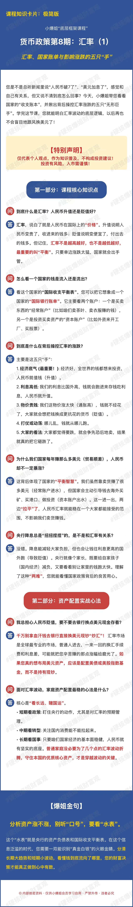